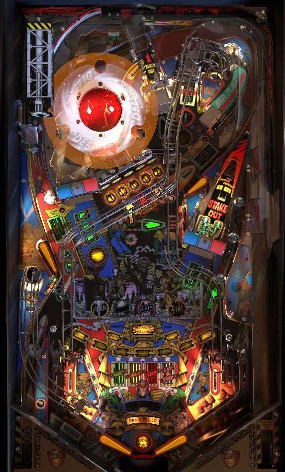

This page only discusses the Regular Game for Judge Dredd. The Super Game, selectable separately, will be covered on its own at a later date.
Judge Dredd has two main features: multiball and modes. For multiball, complete the JUDGE drops in order to light locks, and lock balls at the left ramp; in multiball, left ramp lights jackpot at the scoop behind the drop targets. For modes, shoot the left ramp or Sniper tower upper playfield kicker when lit to start a main mode; most modes can be worth as much as 30-40 million points, and all mode scoring is awarded with the end of ball bonus, so tilting is always a bad idea.
Judge Dredd does not have a conventional plunger or fire button on the front of the cabinet. Instead, there are two buttons on each side of the cabinet: a round flipper button, and a large diamond-shaped button. When there is a ball in the shooter lane, the diamond button on the right launches the ball, and the diamond button on the left rotates which Chain Link main mode is flashing. The left diamond can be used to change the selected mode at any time during gameplay, and is also used to fire the ball out of the lower left launcher during Air Raid described below.
A plunge send the ball around the orbit from right to left, eventually coming to the upper left flipper. Use the upper left flipper to shoot the Big Loop in the direction of the fired bullet on the playfield art to score a skill shot, whose value is a constant 5,000,000 points.
Five shots in the game can be lit for Crime Scene: the left orbit, the Small Loop shootable from the upper right flipper that is partially obscured by the Deadworld lock toy, the Sniper upkicker which can be shot from the lower left or upper right flippers, the Big Loop shootable from the upper left flipper, or the Stakeout lower right ramp. At any given time, at least one of these shots will be lit for Crime Scene (usually not more than three at a time, though). Crime Scenes can be lit green, yellow, red, or white, which indicates that their value is 1,000,000, 2,000,000, 3,000,000, or 4,000,000 points respectively. Different lit Crime Scenes can be different colours; the inserts in the center of the playfield labelled Warning, Misdemeanor, Felony, and Class X Felony only serve to indicate which colours have at least one Crime Scene lit somewhere on the playfield. The Advance Crime Level standup target near the right ramp that faces directly left will increase the value of the lowest-ranked Crime Scene (green-yellow-red-white) and score 1,000,000 points unless all lit Crime Scenes are already white.
Regardless of its value, shooting a Crime Scene shot adds 1 Crime Scene to your total in the game and unlights that shot. When all Crime Scenes are made, new ones are lit, usually 2 or 3 at a time. At 7, 22, 37...Crime Scenes earned, an extra ball will be lit, which can be earned at either of the game's two orange post targets- one between the left orbit and left ramp, and one between the Air Raid side ramp and the Big Loop near the upper right flipper. You also get 1,000,000 points per Crime Scene scored during the entire game as part of the end of ball bonus.
Spell JUDGE in order at the center drop targets to light locks. Drop targets do not reset unless the full bank is completed, so you may need to clear the bank to reset it in order to shoot whichever letter is next. For the first multiball, spelling JUDGE one time lights all 3 locks at once. After that, each spelling of JUDGE only lights one lock. Completing JUDGE when all locks are lit scores 5,000,000 points.
All locks are made at the left ramp. On factory copies of the game, locks 1 and 2 are virtual, with the left ramp shot coming back around to the right in lane. However, many copies of Judge Dredd include a very simple modification that restores the originally intended lock behavior, where up to 3 balls at a time can be physically locked in the orbit around the Deadworld planet toy in the back left of the game. Despite the possibility of physical locks being present, there is not lock stealing in a multiplayer game on Judge Dredd. Each player must lock their own three balls to start multiball.
Multiball always begins with 4 balls in play. The jackpot value starts at 20,000,000 points. Any drop target down adds 1,000,000 points to the jackpot. To light jackpot, shoot the left ramp. To score jackpot, shoot the scoop behind the JUDGE drop targets. Shooting the scoop adds 5,000,000 points to the jackpot, and then scores the new jackpot value. The jackpot does not reset at any point during multiball. The goal of multiball is to collect 4 jackpots in this way- labelled Mortis, Fire, Fear, and Death- by alternating the left ramp and the center scoop. Making all 4 jackpots while keeping 2 or more balls in play starts Ultimate Challenge wizard mode, which is discussed later in the guide because it can be accessed via a second method. There is a brief ball save at the start of multiball, but no add-a-ball or multiball restart that I am aware of.
Shoot the shot lit yellow for "Build Up Chain Feature" to start a mode. The game tries to alternate whether the mode start is at the left ramp or the Sniper Tower upkicker in the back right, but if there are any locks lit at the left ramp, the mode start will always be placed at the Sniper Tower. Most modes are timed to 20-25 seconds. You do not need to complete a mode to earn credit for it. Once a mode has been played, it cannot be replayed until all modes have been played. ALL scoring from Chain Link modes, with the sole exception being Black Out, is awarded alongside the end of ball bonus rather than being given immediately. The more modes you play on a ball, the more you should avoid tilting, as end of ball bonus can be worth several hundred million points for this reason.
In the very lower left of the game is a standup target labelled with a blue ? symbol. This target can be shot one time during any mode to award you something nice during the mode; these awards are discussed alongside each mode's rules below.
You cannot start a mode during multiball or while another mode is running, but you can start multiball during a mode.
There are 9 main Chain Link modes. When you shoot a lit Build Up Chain Feature shot, the mode that begins will be whichever one is flashing. At any time during gameplay, press the diamond button on the left side of the cabinet to rotate which mode is flashing. Simply starting any mode scores 3,000,000 points. The available modes are:
After playing all 9 modes, the 10th mode is Ultimate Challenge, which works the same as it does if you access it by making 4 jackpots in the same multiball; it's described in detail in the next section. Playing Ultimate Challenge in this way unlights all Chain Link modes so that they can be played again.
Ultimate Challenge is a 4-ball multiball wizard mode that can be accessed by either collecting 4 jackpots within a single multiball, or starting a Chain Link mode after playing all 9 main modes. Ultimate Challenge is a 4-ball multiball where all Crime Scene shots are lit in a rainbow of colours to score 10,000,000 points. This continues until single ball play resumes. It is possible to start regular multiball while Ultimate Challenge is running, if you got your Ultimate Challenge from modes completion rather than multiball itself. This means that theoretically it's possible to stack Ultimate Challenge with itself, though I don't believe there's any benefit to doing this other than possibly "restarting" Ultimate Challenge by bringing you back to 4-ball play if any balls had drained. Ultimate Challenge is still considered a mode in that its scoring is awarded in the end of ball bonus, not immediately, so it is even more important not to tilt on a ball where Ultimate Challenge was played.
When not lit for anything else, the left, right, and Blackout back ramps award 500,000 points times the number of times they have been made during the current ball, up to a maximum of 5,000,000 points per ramp after 10 shots. Some players that are very confident with ramp shooting will do nothing but loop the left ramp all day, taking the repeatable low-risk 5,000,000 points over other features that are more dangerous but give points more efficiently.
The upper left flipper can make the Big Loop, and the upper right flipper can make the Small Loop. If they are not lit for anything else, these loops each score 3,000,000 points. If you make the same loop multiple times repeatedly without missing, each one is worth 3,000,000 more than the last. There is no clear limit to this; I've made 14 consecutive Small Loops before, and the last one was worth a whopping 42,000,000 points.
If the ball lands in the lower left kicker lane on its own, it will be automatically returned to play. If the ball is put up the side ramp labelled Air Raid, it will be redirected to the kickback lane; from here, press the diamond button on the left side of the cabinet to fire the ball out of the kickback. If the fired ball hits whichever drop target is lit, you'll score 5,000,000 points.
When Meltdown mode is not running, awards are only given for a full shot to the lower captive ball that causes the upper captive ball to hit the standup target at the end of its lane. At 2 full captive ball hits, double bonus is awarded; this doubles the entire bonus, including all mode scores, from that ball, but the double bonus can only be earned once per game. 6 full captive ball hits lights extra ball; any other multiple of 2 captive ball hits scores 5,000,000 points.
There are three lanes on each side of the table bottom. Starting at the flippers and working outwards, the left side has an in lane, an out lane, and the kickback lane, while the right side has two in lanes and an out lane. All in lanes score 50,000 points and all out lanes score 100,000 points; they cannot be lit or serve as a way to light other features.
Bonus is calculated as 1,000,000 per Chain Link mode played in the game so far, plus 1,000,000 points per Crime Scene scored during the game so far, plus the values of all modes played on that ball in play only. If you played 3-4+ Chain Link modes on a single ball, the bonus can easily be over 100,000,000 points. Double bonus can be redeemed once per game by making a second full shot to the captive ball over the course of the game; double bonus applies to ALL bonus, including scores from modes and Ultimate Challenge. There is no way to carry over the mode scores or the double bonus, and there is no mid-ball bonus collect.
In competition/novelty play, specials score 30,000,000 points, but I am admittedly not sure of how it's even possible to earn a playfield special in this game. The game manual does not specify whether or not it is possible to set extra balls to a point value.
Ball save can be set to anywhere from 0 to 15 seconds at the start of each ball.
All modes can be set to any time limit between 15 and 35 seconds.
| If you need... | Try... |
| 1,000,000 points | ...shooting a ramp or a shot lit for Crime Scene. |
| 5,000,000 points | ...shooting a red or white Crime Scene shot, or starting any Chain Link mode. |
| 25,000,000 points | ...start a Chain Link mode and play it to completion, or start multiball and earn one jackpot. |
| 100,000,000 points | ...start multiball and earn at least 2-3 jackpots, or play at least 2-3 Chain Link modes, especially if you still have your double bonus available. |
| 200,000,000 points or more | ...you will really want to start making a serious run at playing Ultimate Challenge. Whether you do so by starting (and maybe timing out) modes or by playing multiball and trying to stay in multiball for a long time is a matter of personal preference. |